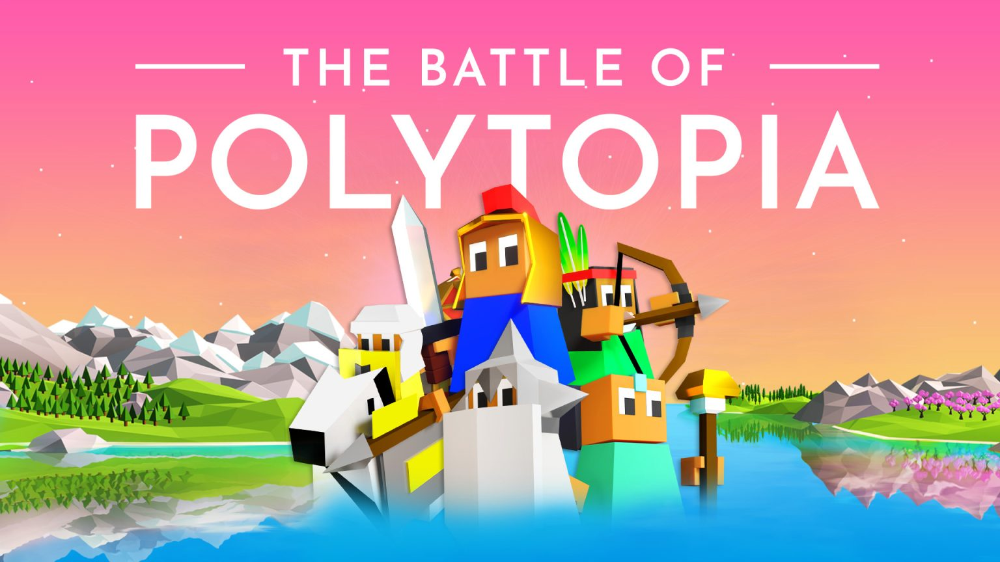

The Unofficial unit strategy guide for

Welcome to the homepage!
In The Battle of Polytopia, units are the most important thing you can invest in. No matter what tribe you're playing as or the game mode you are using, units are important. But with such a diverse array of units, it can be difficult to know which units are the most effective or when. Which is why this website will explain to you: The stats and attributes of each unit, how and when to use them, and different combinations.
This unit guide will not include sea units, because they are quite simple and straightforward to use.
Importent terms/slang:
Cloaked:
Refers to when someone gets attacked by a cloak, E.G. He got cloaked in the last game.
Laked:
This refers to when someone gets a bad postion on a lakes map.
Rough terrain:
Any tile that you natrually get a movment penalty on, like tiles with forests, mountains, and alge.
Paper-Scissor-Rock meta:
Read my strategies page!
For the next step please check out my unit stats page